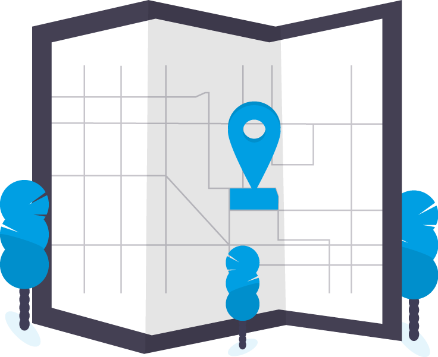

Overview
The DeepHub® is the premier reference implementation of an omlox™ hub. It allows for seamless tracking across different positioning technologies, and facilitates all location-aware use cases in smart production and smart logistics. It is compatible with the omlox™ standard - the open location standard for Industry 4.0.
To get access to a shared cloud instance on AWS or to test drive a local on-premise instance of the DeepHub, contact our Partner Management team at partners@flowcate.com.
Product Requirements
The DeepHub® is offered as a Docker image (orchestrated through Docker Compose) for easy installation and flexible integration with omlox-compliant applications.
Through Docker Compose, the DeepHub can be installed and operated on all standard operating systems.
In order to ensure uninterrupted installation, a Docker environment for running x86_64 containers is required.
The containerized deployment of the DeepHub through Docker enables seamless integration in various scenarios, including isolated and secure environments, without the need for high-end device specifications.
Docker Engine
The DeepHub has a small digital footprint, allowing it to run on low power industry PCs and edge devices. If the DeepHub is deployed via Docker containers, it’s necessary to consider the basic requirements for running Docker Engine. Refer to the latest updates and requirements for Windows and macOS.
The host system operating the DeepHub must have Docker version 20.10.10 or higher. If this version is not available for your Linux distribution out-of-the-box, you can get it directly from Docker by following these steps:
sudo apt-get install apt-transport-https ca-certificates curl gnupg lsb-release
curl -fsSL https://download.docker.com/linux/ubuntu/gpg | sudo gpg --dearmor -o /usr/share/keyrings/docker-archive-keyring.gpg
echo "deb [arch=amd64 signed-by=/usr/share/keyrings/docker-archive-keyring.gpg] https://download.docker.com/linux/ubuntu $(lsb_release -cs) stable" | sudo tee /etc/apt/sources.list.d/docker.list > /dev/null
sudo apt-get install docker-ce docker-ce-cli containerd.io
Virtualization
Virtualization must be enabled in order to run the Docker containers on non-Linux operating systems. For this purpose, the following features should be enabled:
Virtual Machine Platform
Windows subsystem for Linux
Hyper-V
Network
The DeepHub uses multiple network ports that must be available during installation.
Port 8081: DeepHub Docker Proxy
This port needs to be available on the host device. Docker Compose orchestration is configured on this port to facilitate the communication between the DeepHub backend with external interfaces.
Port 443: Outgoing Internet Access for License Lease & Consumption API Endpoint
This port needs to be available in order to get a lease for the DeepHub instance when contacting our license server. For more information, refer to the license mechanism section.
Pricing Model
The pricing model of the DeepHub® is subscription-based. For each end-customer and project, you acquire a subscription with the necessary features and capabilities to build your tailored solution.
You may deploy a DeepHub instance on-premise at your customer’s site, or operate and maintain it yourself - this is entirely up to you.
Our DeepHub is also available as a white label product if your intention is for product bundling.
Subscriptions are purely entity-based, however we also offer consumption-based pricing models as part of individual contracts.
Subscriptions

An RTLS Zone is a zone using UWB technology.
A Complementary Zone is a zone using any other locating technology.
Mobile-Zone support is the indirect tracking of objects based on temporary linking to an object with an active locating technology.
You get even more
As a partner, you’ll get access to the latest versions of the DeepHub via a Docker repository from which you can pull the latest images. Additionally, you’ll get access to our online support tool, enabling you to request support, send feature requests, access the latest information on upcoming releases, share thoughts and insights in the DeepHub community, and get all the latest onboarding material.
Get in touch with our Partner Management team at partners@flowcate.com and start your journey into the Deep Universe.
License Mechanism
Once a day, the DeepHub sends consumption and usage statistics to a Flowcate License Server on SSL/HTTPS port 443 and gets a “lease” back in response.
The latter contains all necessary information for the DeepHub, including when to contact the license server again.
This mechanism is always in place, regardless of whether you have an industrial-grade production system or a first trial installation.
Configuration
The configuration of a DeepHub with this license mechanism is straightforward:
For every subscription, you will receive a trial license key, a development license key, and a production license key. These would have to be defined in the DeepHub configuration.